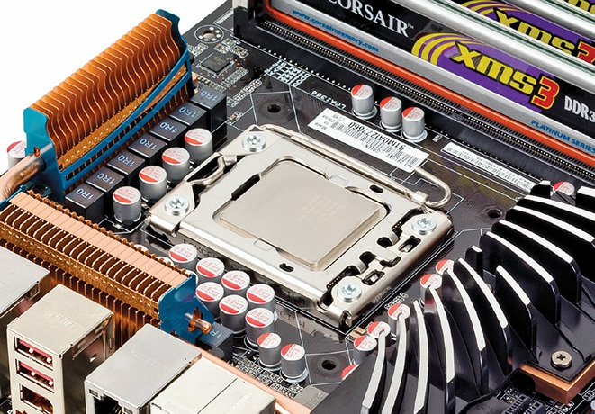

Composant Matériel
Microprocesseur (CPU)
🎯 Définition & Rôle Essentiel
Le processeur (CPU) est le cerveau informatique de l'ordinateur. Il exécute les calculs arithmétiques et logiques et coordonne l'ensemble des autres composants du système selon la boucle extraction-décodage-exécution.
⚡ Processus & Interaction Système
Il charge les instructions depuis la mémoire vive (RAM) à très grande vitesse et délègue les calculs graphiques lourds au GPU dédié.
📋 Fiche Technique CompTIA A+
| Format / Socket | LGA1700 / AM5 |
| Architecture | x86-64 bits, Multi-coeurs |
| Mémoire Cache | L1, L2 et L3 ultra-rapide |
| Consommation (TDP) | 65W à 250W |
| Obligation Atelier | Pâte thermique + Ventirad |
🚨 Symptômes de Défaillance
- Arrêt brutal ou gel du PC sous forte charge.
- Extinction de sécurité thermique (*Thermal Shutdown*).
- Ventilateur tournant à 100% de façon continue et bruyante.
🔧 Méthode de Résolution CompTIA
Nettoyer les poussières du radiateur, remplacer la pâte thermique durcie par une pâte neuve au grain de riz, et vérifier que la pompe de refroidissement ou le ventilateur tourne convenablement.

Figure 2-9 : Wafer de silicium et processeur moderne (Extrait CompTIA A+)